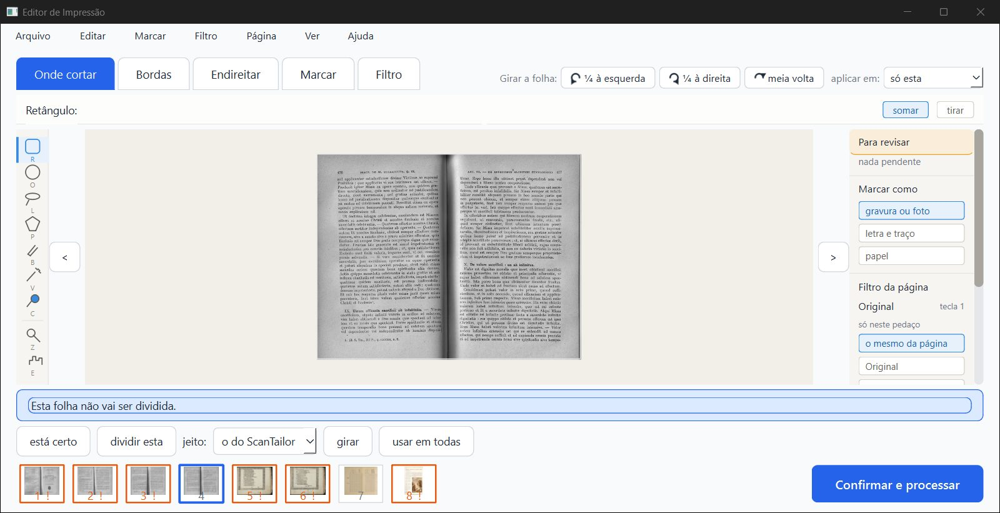
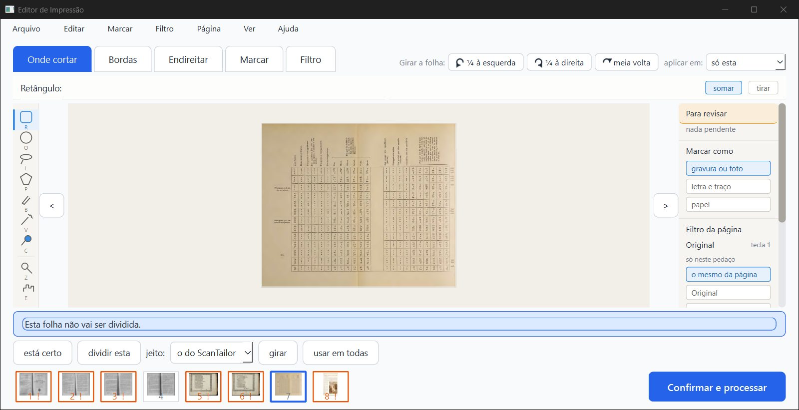
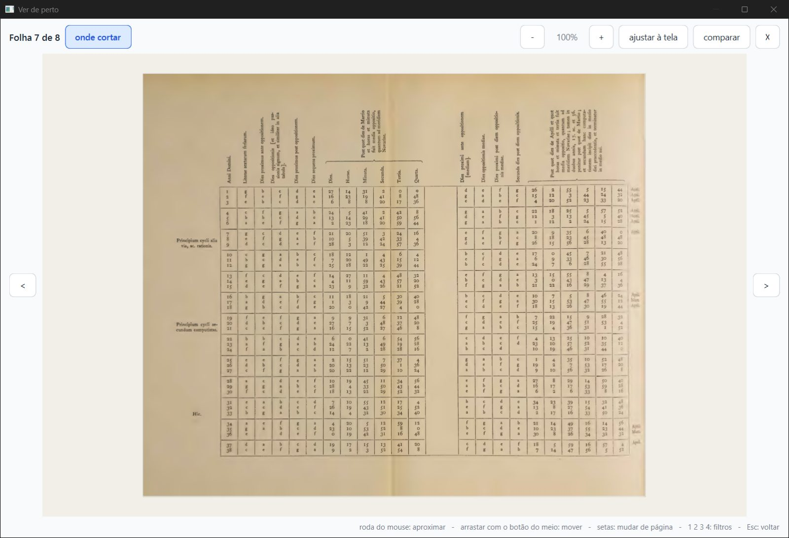
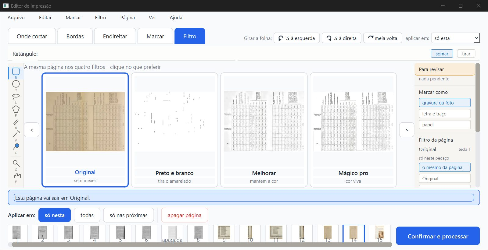
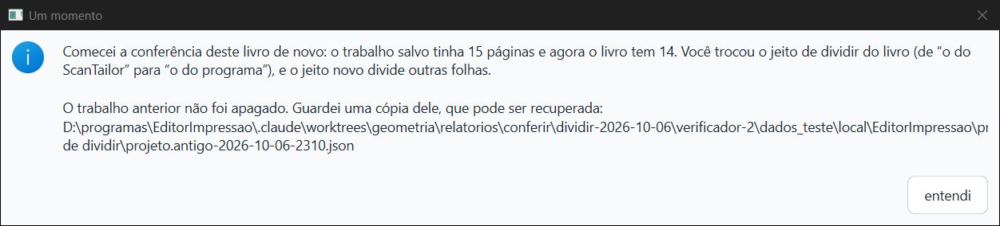
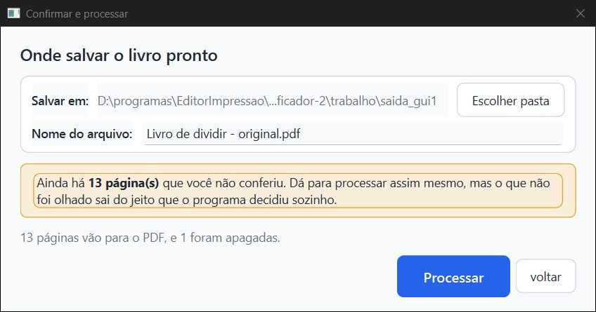
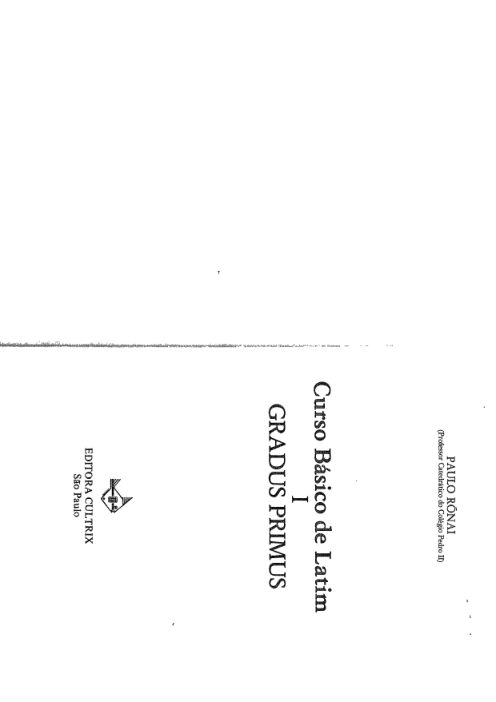

PRONTO PARA JUNTAR, com duas ressalvas pequenas de tela. Os cinco consertos fazem o que prometem.
fase-1, e a página de rosto voltou. No livro novo, quem apaga a página da esquerda e aperta "não dividir esta" fica com a folha inteira no PDF, uma vez só.Não é "aprovado": só o Samuel marca.
O que foi conferido: ramo fase2-dividir, commit 5b7ac75 (consertos e93c085, b2fd46d, ad66613, 2da12de, 11c3f10, 21724a4, 5b7ac75). Comparei com o fase-1 (a5ac122), em cópias git archive.
Pasta de dados: todos os scripts e o programa pilotado rodaram com pasta de dados e TEMP próprios, em verificador-2\dados_teste e verificador-2\trabalho\tmp. O canal do piloto também ficou dentro do projeto. Conferi no fim:
erros.log do Samuel continua com 7989 linhas e a mesma soma do começo desta rodada;projeto.json do Gradus dele continua com a data de 18/07.Nada foi apagado fora do projeto.
| O que | Como | Resultado |
|---|---|---|
| Gradus Primus do Samuel (cópia), 139 páginas | máquina + janela | Bom. Sem janela: a divisão é a mesma, e as 139 prévias e as 139 páginas do PDF são iguais às do fase-1. Na janela: o programa abriu a cópia e processou 139 páginas. Elas são iguais, a 72 e a 150 DPI, às 139 do fase-1 processado na janela na rodada anterior. A página 3 é a página de rosto, "Curso Básico de Latim, Gradus Primus" (c7). A janela de confirmar dizia "139 páginas vão para o PDF, e 1 foram apagadas" |
| Caso b3: livro novo, apagar a esquerda + "não dividir esta" | janela | Bom. Na folha 4 (Hugon 241), apaguei a página da esquerda na aba Filtro e apertei "não dividir esta". A página da direita continua viva e leva a folha inteira; as 8 folhas estão no PDF (c1). No PDF, a página 7 é a folha 4 inteira (0,07 a 1,0 da largura), uma vez só |
| "dividir esta" de volta | janela | Bom. Na mesma folha, volta a dividir. A esquerda continua apagada e sai a metade da direita. Ctrl+Z, Ctrl+Z e Ctrl+Y trocaram dividida e não dividida certo, sem mexer nas páginas apagadas |
| Restaurar a metade escondida não repete a folha | janela + PDF | Bom no PDF, com ressalva na tela. No Opus 256, "não dividir esta" apagou a metade da direita (esquerda viva). Depois, "restaurar página" na aba Filtro trouxe a da direita de volta. O PDF continuou com o Opus uma vez só (13 páginas). A ressalva está abaixo |
| Contador da janela Confirmar = PDF | janela | Bom. Livro de dividir: "13 páginas vão para o PDF, e 1 foram apagadas", e o PDF saiu com 13 (c6). Gradus: 139 e 139. Casei cada página do PDF com a folha de onde veio: nenhuma repetida, nenhuma faltando |
| Textos novos | janela | Bom. Dica do "dividir esta" na folha que entrou inteira: "Esta folha entrou como uma página só: o jeito de dividir do livro não achou duas páginas nela, e aqui não dá para dividi-la." Aviso ao trocar só o jeito: "…Você trocou o jeito de dividir do livro (de “o do ScanTailor” para “o do programa”), e o jeito novo divide outras folhas." (c5). Ao desmarcar a caixinha, continua "Isso acontece quando se muda a opção “Dividir folhas ao meio”" |
| Linha azul | janela | Bom. Na folha não dividida, nada de linha nem de "arraste", na aba Onde cortar (c1, c2) e na tela ampliada ("Ver de perto", c3). Na folha dividida, a linha aparece. Arrastei sobre o Opus não dividido e a posição do corte não mudou (0,4975 antes e depois) |
Projetos antigos montados pelo fase-1 (Hugon, Siebmacher) |
máquina | Bom. A divisão é a mesma, e as 50 + 22 prévias e páginas do PDF são iguais às do fase-1. A única diferença é a de propósito: a folha com "não dividir esta" do programa de antes sai uma vez, e não duas |
| Testes | máquina | pytest arquivo por arquivo (102 arquivos): 1830 passaram, 59 pularam, 0 falharam. Destes, test_dividir_na_tela deu 8, test_dividir_no_programa 18, test_dividir_scantailor 13, test_projetos 24, test_modelos 4 e test_visualizador 70. teste_botoes.py, numa cópia git archive do 5b7ac75 com saida_teste própria: 166 ações, 0 falhas |
fase-1 fazia, e nada some. Concordo que é o mais seguro.






parecer-verificador-2-dividir.html (.md, .pdf).dados/):fase-1 × novo: antigo/;pytest_partes.log;teste_botoes.py: teste_botoes_fim.txt;pdf_gui1.json.scripts/. O py.sh roda tudo com a pasta de dados própria.Editor de Impressão · gerado em 06/10/2026 às 23:21